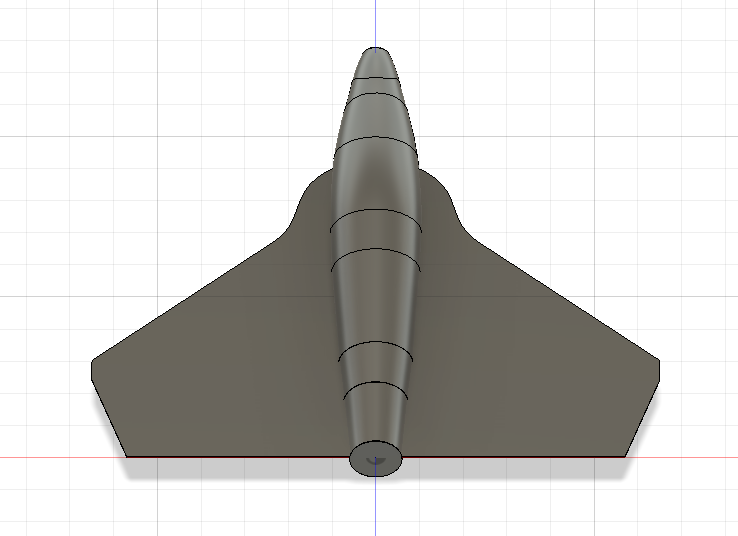

X65 Aether — 65cm Tailless Flying-Wing UAV
Featured Build · Custom STM32 Flight Controller & 64mm EDF Airframe
Build in Progress
Compact 65cm wingspan tailless flying-wing UAV transitioned from initial concept into active airframe and avionics design. Powered by a selected 64mm EDF propulsion unit paired with a custom STM32F401RET6 flight controller and COTS ESC.
Development Status Tracker
Stage 2 of 5 // Airframe CAD & Schematics
01. Concept
02. CAD & Schematics
03. Airframe & PCB
04. Bench & Thrust
05. Maiden Flight
Currently Working On: Tinkering with 2D fuselage and wing airfoil shapes in CAD, locking in packaging around the selected 64mm EDF, and starting schematic preparation for the STM32F401RET6 flight computer.
Airframe65 cm Tailless Flying Wing
Propulsion64mm Electric Ducted Fan (EDF)
Flight ControllerCustom STM32F401RET6 PCB
Current Focus2D Wing/Fuselage & FC Schematics
Photo Album (X65 Airfoil & Fuselage Studies)

